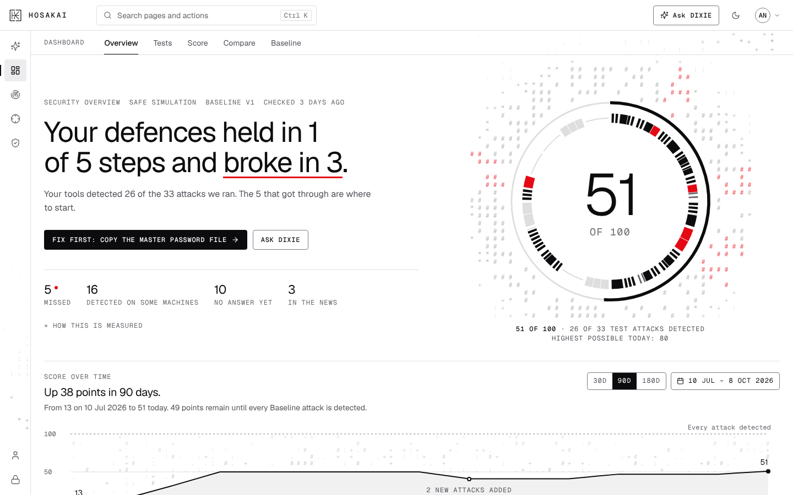
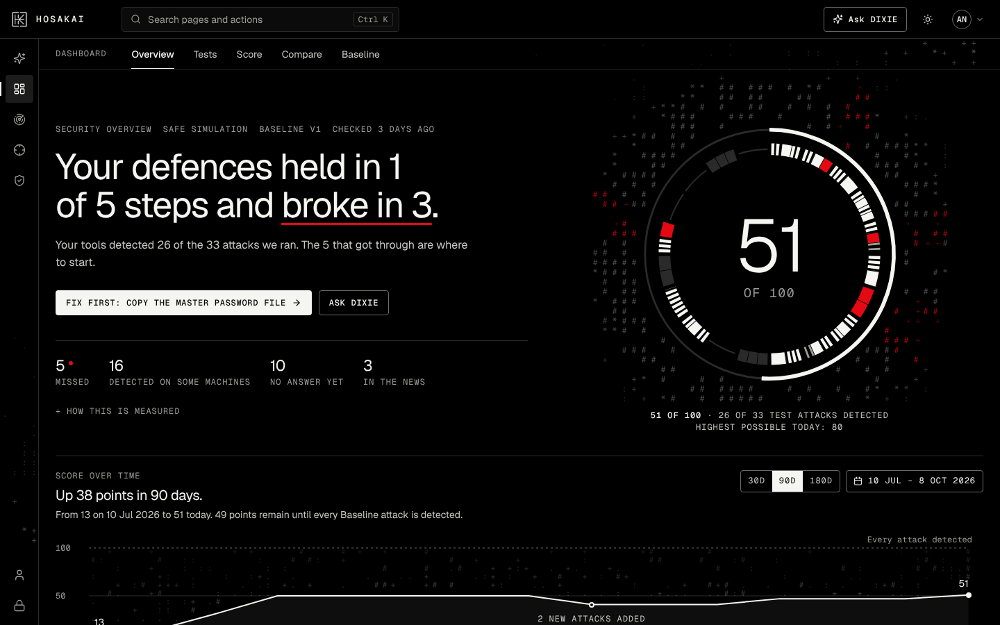

Example resultSafe simulation
Your defences held in 3 of 5 steps and broke in 2.
Breachmatrix runs safe test attacks through your defences and shows where they held and where they broke.
The problem
Security tools are bought to catch attacks, but few teams can say which attacks they would miss.
How it works
Three steps, from the first test to the first fix.
-
01
Run safe test attacks
An agent on your network runs safe tests of real attacker techniques. Each one starts from an ordinary signed-in account.
Executed Running Not executed
-
02
Check what your tools saw
Breachmatrix asks your detection tools whether each attack raised an alert. You see every result, one line each.
Detected Checking… Not detected
-
03
Fix what got through
For each miss you get a detection query to add to your tools. Run the test again to confirm the fix.
Not detected then, after the fix, Detected
Product
The answer comes first.
The dashboard opens on one sentence: where your defences held, and where they broke. The numbers and the detail sit under it.


Security
The five steps of an attack on your network
Every attack is a safe test run by a Breachmatrix agent, never a real one. Each test runs on its own; the steps show where in an attack it fits.
- 01 Scout your systems Discovery All detected
- 02 Steal passwords Credential access 2 missed of 7
- 03 Spread to other computers Lateral movement 1 missed of 5
- 04 Seize the login system Domain dominance All detected
- 05 Leave a back door Persistence All detected
How this is measured
Each test starts from an ordinary signed-in account, so the question is whether your tools notice an attacker who is already inside. A step holds when every test in it raised an alert. An attacker only needs one unnoticed way through a step.
Proof
Results from real assessments
00
Attack techniques in the test library
00
Minutes from install to the first result
00
Missed attacks fixed and detected on rerun
( Contact )
See where your defences break.
Book a demo. We will walk you through a full assessment, from the first test to the first fix.